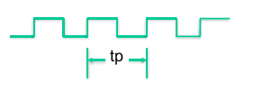

midterm review
Clock frequency
\[ f = \frac{1}{tp}, tp = \frac{1}{f} \]

Parasitic resistance

Parasitic capacitance

Terminal voltage across a capacitor cannot be changed immediately.
Silicon switches have a parasitic capacitance due to the physical structure.
Serially connected resistance and capacitance result in a del, which is often called as “RC delay.”
Switching and delay
Parasitic resistance and capacitance results in RC-delay.
Input → delay → output
We should wait until the output is completely changed!

Bus and interconnection
How is the data delivered? How can you put and get the data to/from the processor?

Data transfer
Serial

Parallel

RISC vs. CISC
| CISC | RISC |
|---|---|
| emphasis on hardware | emphasis on software |
| multiple instruction sizes and formats | instructions of same set with few formats |
| less registers | uses more registers |
| more addressing modes | fewer addressing modes |
| extensive use of microprogramming | complexity in compiler |
| instructions take a varying amount of cycle time | instructions take one cycle time |
| pipelining is difficult | pipelining is easy |
Mind and intelligence
What is intelligence?
- I don’t either. Then, who is intelligent?

Mind-body problem
- How the human mind and body can causally interact
Kant: philosophy of mind
- sensibility, understanding and reason

Automata
A self-operating machine, or a machine or control mechanism designed to automatically follow a predetermined sequence of operations, or respond to predetermined instructions.
Automata theory
The study of abstract machines and automata, as well as the computational problems that can be solved using them.

What can we do with the machine?

An automation that recognizes strings containing an even (or odd) number of 0s.
Computation and automata
Theory of computation
- How efficiently problems can be solved on a model of computation, using an algorithm
- automata theory
- formal language theory
- computability theory
- computational complexity theory
algorithm
- a process or set of rules to be followed in calculations or other problem-solving operations, especially by a computer
Electronic computers
Arithmetic units and combination logics with relay, vacuum tube, and transistors
Performance, density, power

more transistors with higher frequency
knee points around 2000 ~ 2005
hurdles to be tackled
- power
- temperature
Future of microprocessor
In the next 20 years
- Package power/total energy consumption limits number of logic transistors
- Organizing the logic - multiple cores and customization
- Orchestrating data movement - memory hierarchies and interconnects
- Pushing the envelope - extreme circuits, variability, resilience
- Software challenges renewed - programmability versus efficiency
Microprocessor internals
Control unit (CU)
decodes the program instruction in the IR, selecting machine resources such as a data source register and a particular arithmetic operation, and coordinates activation of those resources.
Arithmetic logic unit (ALU)
performs mathematical and logical operations
Register pile
Registers
Program counter (PC)
an incrementing counter that keeps track of the memory address of the instruction that is to be executed next or in other words, holds the address of the instruction to be executed next.
Memory address register (MAR)
holds the address of a memory block to be read from or written to
Memory data register (MDR)
a two-way register that holds data fetched from memory (and ready for the CPU to process) or data waiting to be stored in memory. (This is also known as the memory buffer register (MBR).)
Instruction register (IR)
a temporary holding ground for the instruction that has just been fetched from memory
Ex) ARM7-TDMI structure

Execution cycle
Automatic execution of instruction
- Turing machine
- a machine that mechanically operates on a tape
- On this tape are symbols, which the machine can read and write, one at a time, using a tape head
- Operation is a finite set of elementary instructions such as “in state 42, if the symbol seen is 0, write a 1”
- Turing imagines not a mechanism, but a person whom he calls the “computer”, who executes these deterministic mechanical rules slavishly (or as Turing puts it, “in a desultory manner”)

Instruction cycle
5 stage pipelined instruction cycle
Fetching the instruction
The next instruction is fetched from the memory address that is currently stored in the program counter (PC), and stored in the instruction register (IR).
Decode the instruction
The encoded instruction in the IR (instruction register) is interpreted by the decoder.
Read the effective address
If the instruction has an indirect address, the effective address is read from main memory, and any required data is fetched from main memory to be processed and then placed into data registers.
Execute the instruction
The control unit of the CPU passes the decoded information as a sequence of control signals to the relevant function units of the CPU to perform the actions required by the instruction.
Memory devices
Read-only memory (non-volatile)
ROM - programmed at factory
PROM and EPROM - programmable and erasable ROM
Flash memory
Random access memory (volatile)
SRAM, DRAM
Emerging memory technologies
Phase-change memory (PCM), STT-RAM, MRAM
I/O devices
Input devices - mouse, tablet, switches
output devices
- printer, relays
- displays - LEDs, CRT and TFT…
Input/output devices - hard disk
I/O methods
From/to microprocessor
- memory mapped I/O
- I/O mapped I/O
- interrupt
Direct memory access
Address space
Microprocessors thinks the everything around them is a just address.
External devices are located in the space of address - memory map!
Addressable range and address bus width
- 16bit address → \(2^{16}\) of objects can be identified
Memory map
address decoding
- address space with multiple chip devices


Address decoding
How to select a specific device according to the address from the microprocessor?
- generate chip select signal with a specific combination of address


By using demultiplexer, we can generate a signal to select a specific devices when we have enough memory space!
What will happen when we use lower 4 bits instead of higher 4 bits?
- Memory map is divided are not continuous.
Memory interface signals in microprocessor
address bus, data bus, control signals
High-Z
What should the other devices do when they are not selected?
- Acts like unconnected
- high-Z in tri-state buffer

Volatile memory: SRAM

Register interface
Communication between the processor and external IPs in the systems.
- External communication from the processor only can be done by memory read and write to a certain address.
- Configure and control the behavior of the IPs over registers
- configuration by setting registers
- trigger an operation by setting a certain bit

Asynchronous serial communication
Eliminates the need for a clock signal between the transmitter and receiver

Timing should be maintained by each system

Synchronous serial communication

Data serialization
Counter + shift register
- send bit by bit until counter meets the length of data frame
Motivation for serial communication
Connect different systems together
- two embedded systems
- a desktop and an embedded system
connect different chips together in the same embedded system
- MCU (Microcontroller Unit, microprocessor) to peripheral
- MCU to MCU
Without using a lot of I/O lines
- I/O lines require I/O pads which cost and size
- I/O lines require PCB area which costs and size
- often at relatively low data rates
- but sometimes at higher data rates
So, what are our options?
- Universal synchronous/Asynchronous receiver transmitter, also known as USART
Serial bus design
Number of wires
asynchronous or synchronous
speed of transferring data
Can it support more than two endpoints?
Can it support more than one master?
How do we support flow control?
How does it handle errors/noise?
Multidrop bus (MDB)

How to handle multiple (potential) bus drivers?
Tri-state devices, just have one device drive at a time. Everyone can read though.
- Pros - very common, fairly fast, pin-efficient
- cons
- tri-state devices can be slow, especially drive-to-tri-state
- need to be sure two folks not driving simultaneously
Most common solution (at least historically)
- Ethernet, PCI, etc.
MUX
just have each device generate its data, and have a MUX select.
- That’s a low of pins.
- Consider a 32-bit bus with 6 potential drivers.
- how many pins needed for the MUX? 64 pins
- not generally realistic for an “on-PCB” design as we’ll need an extra device (or a lot of pins on one device)
- but reasonable on-chip, in fact AHB, APB do this.

UART (Universal Asynchronous Receiver/Transmitter)
Hardware that translates between parallel and serial forms
The universal designation indicates that the data format and transmission speeds are configurable and that the actual electric signaling levels and methods (such as differential signaling etc.) typically are handled by a special driver circuit external to the UART.
Protocol
Each character is sent as
- a logic low start bit
- a configurable number of data bits
- an optional parity bit
- one or more logic high stop bits

Variations
UART is actually a generic term that includes a large number of different devices/standards.
- RS-232 is a standard that specifies
- Electrical characteristics and timing of signals, the meaning of signals, and the physical size and pin out of connectors.